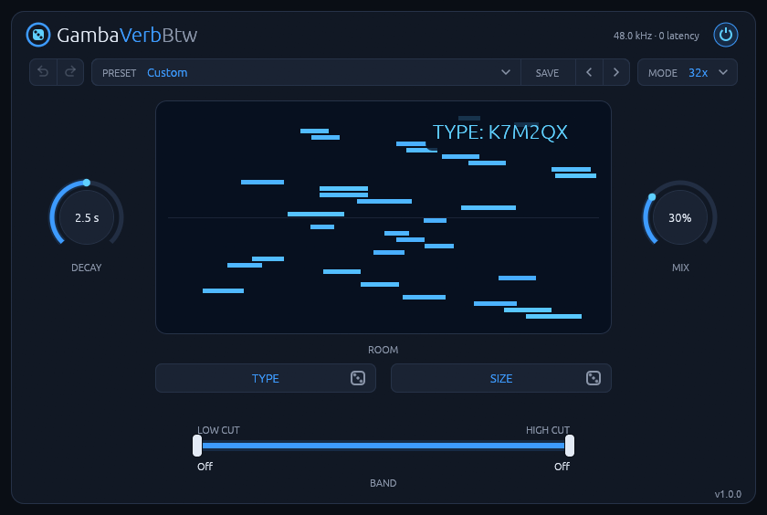
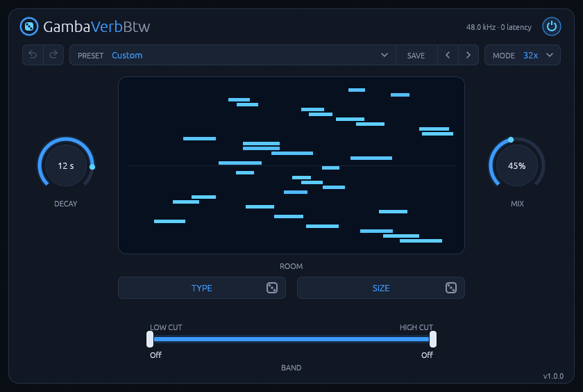
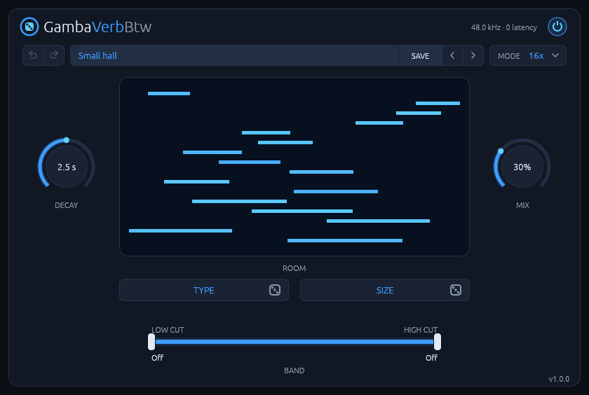

GambaVerbBtw doesn't aim for the smooth, polished tail of a classic algorithmic reverb. It builds the resonances of a real room: 16 or 32 delay lines feed back into each other, and you hear early reflections and the room's own ring. Click TYPE or SIZE to roll a new room, and save the one you like as a preset. The same codes in the same mode always give the same room, on every machine.
It runs natively on Linux, with no network access and no telemetry.
Read the manual for every control and how to use it.
Features
- Rooms from codes: two six-character codes, about 10¹⁸ rooms in each mode.
- Two modes: 16x, or 32x for a denser, smoother tail at about twice the CPU.
- DECAY is the real reverb time: 0.2 to 20 s, measured at 500 Hz.
- The band filters only the reverb; the dry signal is never touched.
- Presets, and undo and redo for the room.
- Zero latency. About 0.2% of one core in 16x, 0.45% in 32x (stereo drums at 48 kHz, i7-14700K).
Install
Download the latest version from the Releases page, or with these commands:
curl -LO https://github.com/rmnhofma/GambaVerbBtw-release/releases/download/v1.1.2/GambaVerbBtw-1.1.2-linux-x86_64.tar.gz
curl -LO https://github.com/rmnhofma/GambaVerbBtw-release/releases/download/v1.1.2/GambaVerbBtw-1.1.2-linux-x86_64.tar.gz.sha256
sha256sum -c GambaVerbBtw-1.1.2-linux-x86_64.tar.gz.sha256 && tar xzf GambaVerbBtw-1.1.2-linux-x86_64.tar.gz
cd GambaVerbBtw-1.1.2-linux-x86_64
Install for your user:
mkdir -p ~/.clap ~/.vst3
rm -f ~/.clap/GambaVerbBtw.clap && cp GambaVerbBtw.clap ~/.clap/
rm -rf ~/.vst3/GambaVerbBtw.vst3 && cp -r GambaVerbBtw.vst3 ~/.vst3/
Or for all users:
sudo mkdir -p /usr/lib/clap /usr/lib/vst3
sudo rm -f /usr/lib/clap/GambaVerbBtw.clap && sudo cp GambaVerbBtw.clap /usr/lib/clap/
sudo rm -rf /usr/lib/vst3/GambaVerbBtw.vst3 && sudo cp -r GambaVerbBtw.vst3 /usr/lib/vst3/
Removing the old copy first avoids overwriting a file a running host has loaded. Then rescan plugins in your DAW.
To uninstall:
rm -rf ~/.clap/GambaVerbBtw.clap ~/.vst3/GambaVerbBtw.vst3
Requirements
- Linux x86-64 with glibc 2.31 or newer (Ubuntu 20.04, Debian 11, Fedora 32 and newer)
- A CLAP or VST3 host
- X11 or XWayland, and a Vulkan driver for the editor
Releases contain the CLAP and VST3 plugins only.
License
MIT, see LICENSE. The licenses of the third-party code in the binaries are in
THIRD-PARTY-LICENSES.txt in each release archive.
VST is a registered trademark of Steinberg Media Technologies GmbH. CLAP is an open standard by the free-audio project. GambaVerbBtw is an independent project. It isn't affiliated with or endorsed by Steinberg or by u-he, whose Protoverb inspired its approach.
Screenshots





